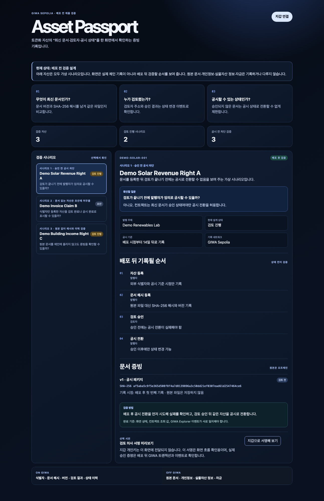

GIWA 위에서 토큰화 자산의 최신 문서·검토·공시 이력을 검증하는 RWA 운영 증빙 서비스
by AssetPass어떤 문서가 최신본인지, 원본이 바뀌지 않았는지 확인이 어렵습니다.
누가 어떤 근거로 검토·승인했는지 책임 이력이 분산됩니다.
현재 자산의 공개·보류 상태와 예정 일정을 일관되게 보기 어렵습니다.
자산 ID, 문서 해시·버전, 역할별 검토 승인, 상태 변경, 공시 일정만 기록합니다.
발행자·검토자·감사자·보유자가 지갑 기반으로 최신 운영 상태를 확인합니다.
자주 갱신되는 문서·상태 이력을 부담 없이 기록하는 데 초점을 둡니다.
표준 EVM 지갑으로 역할별 검토와 공개 검증 경험을 구현합니다.
GIWA Sepolia에서 실제 온체인 흐름을 검증하고 생태계의 RWA 신뢰 레이어로 확장합니다.
문서 해시, 상태 전이, 지갑 연결과 서명 미리보기, 역할별 기록 규칙을 시나리오 화면으로 구현했습니다.
등록·검토·공시 이벤트를 GIWA Explorer에서 대조하고, 승인 전 공시 차단과 원본 문서 해시 일치를 재현합니다.
완료 기준은 화면·컨트랙트 조회·Explorer 이벤트가 같은 사실을 가리키는 것입니다. AssetPass는 1인 프로젝트이며 AI는 조사·코드 초안·문서 정리의 보조 도구로 활용합니다.

GIWA Sepolia에서 등록·검토·공시·검증 흐름을 시연합니다.
RWA 발행·운용 사업자와 문서 증빙 및 공시 운영 파일럿을 설계합니다.
역할 정책, 알림, 감사 리포트, GIWA Wallet 연동 후보로 확장합니다.
AssetPass는 자산을 사고팔거나 보관하지 않습니다. 자산을 둘러싼 문서·검토·공시의 최신 상태를 누구나 확인할 수 있게 만드는 신뢰 운영 인프라를 만듭니다.
Asset Passport · GIWA GASOK 2026